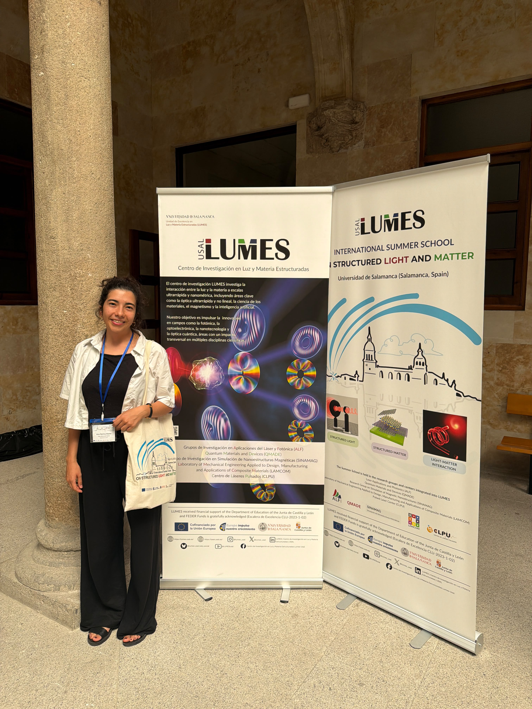

July 2026
Last week, Ana attended the 2nd International Summer School on Structured Light and Matter, organized by the Unit of Excellence on Structured Light and Matter (LUMES) of the University of Salamanca, Spain, from July 6 to July 10, 2026. Ana won a travel award to attend the summer school and won second place at the “Hands on Python - Structured Light” challenge. Congratulations and well done!
